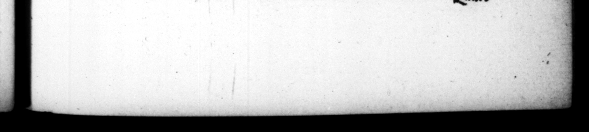

teſtem e proyancia al an he | s naty auiam, adeb cauſidicos paſin:, litigarori Greculo in altercatione excidit, * % Yew oy geit Equitem quidemRomanumobſccenitatisin fteminas teum, ſed ialſo, & ab imporentibus inimicis conficto crimine, ſacs conſtat, cum ſcorta mexitoria citari adverſus ſe, & audiri pro teſtimonio videret, graps & libellos, quos teneat in manu, ita cum magna ſtultitiæ & ſzvitiz exprobratione jecyTe in faciem ej u, ut genam non leyizer perſtrinxerit. | | ainſt him, ubbraided him in very ſeuere language — and then threw” his e 22 — hand full drive in the fate gave bim an 16. Geſſit & cenfuram intermiſſam diu poſt Paullum Plancumque cenſores : quoque inæqualiter, varioque & animo & eventu. Recognitione equitum juvenem probri plenum, ſed quem pater probatiſſimum ſibi atArmabar, fine ignominia dimiſit, habere dicens cenſorem ſuum. Alium corruptelis aCulreritſy famoſum, nihil amplius quam monuit, 1 aut parcits ætatulæ indulg cret, aut certe cautius. Addiditque % = T1B..CLAUDIUS; CASAR. be had in rift, before. ian int Mole th to #8 { ad E * u inc 8# perſon that was ft Aa: ee by council, oli wen ſay ugly wound on the fed For the debauching of youth both male | Quare 21 4 words, Thi ve it fo8at were in a Dry». b things 8: theſe, he i bas 7 1 2 — And yet it is nd more than What is uſual. 7 _ 271 LI — | , that t es n uſed ro abuſe his pati enet fo 2 that they would not only call him back; as be was poi! the bench, bu would ſeize him by the lap of bis coat, and ſymerimes catch bim by the heel to yy ke him ſtay. And that no one may think this Prone ſome jorry Greek that bad # cauſe before bim, in a warm debate that happened upon it, ee out t0 him, u art an old fellow, and a fool too. It's cer Ar- 4 * —_ who was il ecute s malicious conink Mo hi. enemys as guilty of una lewdneſs wit» women, obſerv=: ing that. frumpets were anmone a ee to give evidence Fit his folly he had in bis. _ that wiolence, that be EE. ' p | . 16. He * K . — the ce or, which ha n diſconti · — uy the time that Paullus and. | Plancus had enjoyed that bonour ther. But upon this occaſion, again be behaved r and with: a ftrange variety of humor and cund ud. In bis review of the gent lemem. a,) a war-horſe by the puolick, be di{muſſe without any mark of infantry, a ſcanda lius young fellow, only becauſe his — ther declared his of his viour, ſaying, he had his own proCenſor ; another that was infamous
